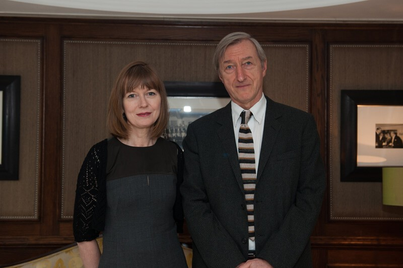

Last Tuesday evening tpr attended this year’s André Simon Food & Drink Book Awards, which showcase the best of contemporary food and drink writing. Man Booker winning novelist, Julian Barnes and cookery writer, Annie Bell announced the results at the Goring Hotel in London. The awards were a great indulgence for tpr’s taste buds!
Huge congratulations to the winners – writer and photographer Mark Diacono (known for his commitment to sustainable, ethically sourced food) scooped the prestigious prize for food writing for, A Year at Otter Farm (Bloomsbury). A truly inspiring book, which the judges commended for its vibrant celebration of growing, cooking and eating alongside high production values, charts the seasonal challenges and triumphs of rural living. The book is packed with yummy recipes through the seasons, all brimming with flavour and fresh ingredients.
Mark Diacono was over the moon: "It’s astonishing to win this award, especially considering the quality of previous winners – from Nigel Slater to Hugh Fearnley-Whittingstall. It’s such a great honour and I’m really bowled over. It’s still sinking in."
Wine writer Wink Lorch was awarded the drink prize for Jura Wine (Wine Travel Media), an insider’s guide to the Jura wine region, with local food and travel tips. The judges felt this was exhaustively researched, packed with information and full of good photos – many by Mick Rock, who collected Wink’s award on her behalf.
A Special Commendation was awarded to philosopher Julian Baggini’s publication The Virtues of the Table (Granta) – which looks at how we eat, farm and shop for food and what these choices say about us. Annie Bell described the book as "inspired", "Julian attacks his subjects with swashbuckling bravado, skilfully dissecting the received wisdom and tossing it aside, he then rebuilds the facts into a completely new model."
Winner of this year’s John Avery award was Sediment (John Blake Publishing) by Paul Keers and Charles Jennings in recognition of its humorous and wry look at the social, financial, personal and marital issues surrounding middle-class wine drinking. "It’s the funniest wine-book I’ve read in a long time," explained Julian Barnes, "Not just laugh-aloud funny but snortingly, choke-on-your-cornflakes funny – up there with Kingsley Amis and Jay McInerney."
This year’s shortlisted authors – selected from over 150 entries – also included Justin Gellatly (Bread, Cake, Doughnut, Pudding), Hattie Ellis (Spoonfuls of Honey), Sarit Parker & Itamar Srulovich (Honey & Co), Oliver Gladwin, Richard Gladwin & Gregory Gladwin (The Shed: The Cookbook), Meera Sodha (Made in India), Isabelle Legeron (Natural Wine), Talia Baoicchi (Sherry) and Dieter Braatz, Ulrich Sautter & Ingo Swoboa (Wine Atlas of Germany).